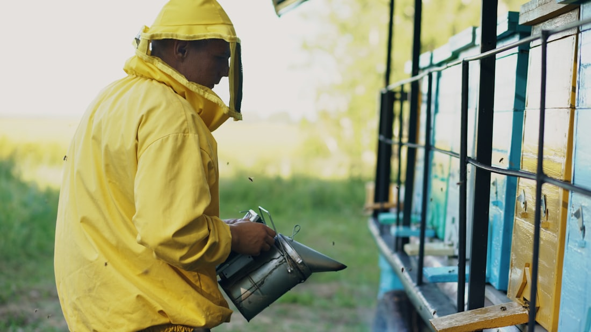

Hakkımızda
Bir arının çiçekten çiçeğe yolculuğu, yalnızca balın değil; yaşamın kendisinin devamıdır.
Tıpkı tarım gibi, arıcılık da tek bir ürünün değil; bilimin, tarımın, ekonominin, kültürün, eğitimin, teknolojinin ve insanın doğayla bağının bütününün adıdır. Apikültür, bu bütünlüğü temsil eder.
Apikültür Vakfı; arıcılığın bilimsel, çevresel, ekonomik ve kültürel boyutlarını geliştirerek sürdürülebilir arıcılığı teşvik eder, genç arıcıları destekler ve iyi arıcılık uygulamalarını yaygınlaştırır.
Araştırma, eğitim, inovasyon ve farkındalık çalışmalarıyla hem arıcıların hem toplumun bilgi düzeyini yükseltir; arıların korunmasını ve biyoçeşitliliği temel amaç sayar.

Vizyon
Yaşamı merkeze alan bir referans.
Arıyı, polinasyonu ve biyoçeşitliliği merkeze alarak; bilim, eğitim, teknoloji ve kültürü buluşturup daha dirençli ekosistemler ve daha güçlü toplumlar oluşturmak.
Misyon
Bilim, eğitim ve iş birliği.
Arıcılığı eğitim, araştırma, inovasyon ve kültürel mirasın korunması ekseninde destekleyerek yaşamın devamlılığına katkı sağlamak.